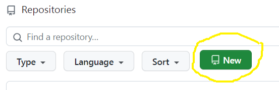
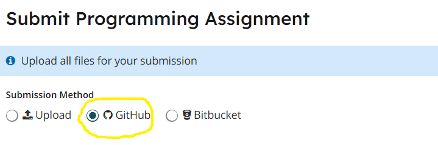

Homework 9
Last updated: Thu, 9 Apr 2026 20:25:56 -0400
Out: Tue Apr 07 2026, 11am EST
Due: Tue Apr 14 2026, 11am EST
Overview
In this assignment, we will use everything we have learned thus far in the course to begin to implement our own high-level programming language!
This hw will be graded accordingly:
correctness (Autograded) (24 pts)
design recipe (12 pts)
testing (12 pts)
style (20 pts)
README (2 pt)
Setup
Create a new repository for this assignment by going to the CS450 Spring 2026 GitHub Organization and clicking "New".

Note: The CS450 Spring 2026 GitHub Organization must be the owner of the repository. Please do not create the repository in your own account.
On the "Create a new repository" screen:
Name the repository hw<X>-<LASTNAME>-<FIRSTNAME> where <X> is the current homework number.
For example, I would name my hw9 repository hw9-Chang-Stephen.
Mark the repository as Private.
Check "Add a README file".
Select the Racket template for the .gitignore.
Choose whatever you wish for the license.
When done click "Create repository".
Updating Racket450
Make sure you have the latest version of racket450.
To do this from DrRacket, go to File -> Package Manager -> Currently Installed, search for "racket450", and then click "Update".
Alternatively, if you prefer the command line, run:
raco pkg update racket450
Reading
Review Chapters 21 and 23 of the Textbook.
NOTE: The textbook will refer to "Student Languages" which we do not use in this course (and a "Stepper" that only works with the Student Languages). Instead, we use a version of Racket tailored for this course, which is invoked by putting #lang racket450 at the top of a file (see also Before Submitting).
Also, read any relevant sections of the The Design Recipe section of the course website (topics that will be covered in future lectures are marked as such).
Tasks
The main code should go in a file named hw9.rkt that uses #lang racket450, as described previously.
NOTE (new): To make this assignment self-contained, some parts of previous solutions may be given for this assignment (see below). Nonetheless, you must still write this assignment on your own from scratch. No credit will be given if you do not do this.
NOTE, on not automatically running code: The submitted program must be only a series of defines (both constants and function definitions are allowed). It should not run any code other than check-equal? Examples. Not following this will result in GradeScope errors and/or timeouts.
As usual, all submitted code must follow the The Design Recipe. This means that language features may only be used in the correct scenarios, as called for by The Design Recipe.
For example, set! and other "imperative" features are not allowed ever.
Conditionals such as if and cond are only to be used with the appropriate Data Definitions or in other appropriate scenarios described in class.
Signatures should use define/contract and the predicates defined in the Data Design Recipe step. In this assignment, you may use the listof contract constructor where appropriate.
For Examples and Tests, do not use check-expect from the Beginning Student Language (even though the textbook says to). Instead, use check-equal? or other testing forms from rackunit (which are built into racket450, so do not explicitly require rackunit).
Examples for a function definition should be put before the define in hw9.rkt.
Tests should be put a into hw9-tests.rkt file that uses #lang racket450/testing. Try to think about corner cases and code coverage.
NOTE, on one-line helper functions: If the name and description of a "helper" function clearly describe what it does, and it clearly follows some Data Definition and all other Design Recipe steps (the course staff is the final arbiter of this), it does not need to be submitted with Examples and Tests if they are covered by other tests. ("Helper" functions are defined as functions not described in the homework assignment description.) NOTE: This does not change the Design Recipe. It is only changing submission requirements. As usual, however, we will not be able to help debug code that does not follow the Design Recipe, so omit these steps at your own risk.
All other functions should have at minimum one Example and "sufficient" Tests.
Programming
Create your programming language by implementing parse and run functions that use the following data definitions.
Program Data Definitions
For each of these data definitions, you should complete them by writing the necessary predicates, constructors, etc.
- A Program is one of:
`(arr ArraySyntax)
`(slice ,Program SliceSyntax)
`(+ ,Program ,Program)
Represents: the surface-level syntax of a new programming language (i.e., this is what programmers write). The ArraySyntax we will use is similar to the quote-and-square-bracket construction an Array from previous hws, except without the quote since the context of its use is already inside another quote or quasiquote. For example one would write the Program ’(arr [[1 2] [3 4]]), where the inner ArraySyntax has no additional quote.SliceSyntax will try to be similar to NumPy. For example, in this new programming language, we want to be able to write a Program like ’(slice (arr [[1 2] [3 4]]) [0,1]) (and have it evaluate to 2). See parse-slices below for more details on how to do this.
- An AST is one of:
(mk-arr Array)
(mk-arrslice AST Listof<Slice>)
(mk-add AST AST)
Represents: an abstract syntax tree data structure that is produced from parsing the surface programAn Array here is the Array value like in Homework 7 and Homework 8, with the addition of strings. The full data definition is defined below.
A Slice is also like Homework 7 where it can either be a lone index, or a compound data containing a start, stop, and step values.
- A Result is one of:
Array
Represents: possible results of running a program in our new language.
Array and Data Definitions
- An Atom is one of:
Number
Bool
String
- An Array is one of:
Atom
ArrayList
An ArrayList is one of:Further, an Array has an additional invariant that it is "rectangular", meaning that along any one dimension, each element must have the same length. For example, in a 2d Array, all the rows must have the same length.
Functions (define and provide)
parse : takes a Program and produces an AST abstract syntax tree data value.
run : takes an AST tree and "runs" it, to produce a Result "result"
As mentioned in lecture, operations on arrays, e.g., slicing or adding, should follow the behavior of NumPy. When dealing with Atoms, "addition" should follow JavaScript semantics. We will use the repljs.com evaluator as the official specification for this behavior.
parse-slices : parses SliceSyntax into a Listof<Slice>.
As mentioned above, the goal is to get close to NumPy’s syntax, where slices are separated by commas and each slice can have up to two colons that separate the start, stop, and step values. Also, any of the start, stop, step values may be omitted. Here are some example programs that we should be able to write:
’(slice (arr [1 2 3]) [1])
’(slice (arr [1 2 3 4]) [0 : 2])
’(slice (arr [1 2 3 4]) [0 : 3 : 2])
’(slice (arr [1 2 3 4]) [ : 3])
’(slice (arr [1 2 3 4]) [ : : ])
’(slice (arr [[1 2] [3 4]]) [1,1])
’(slice (arr [[1 2 3 4] [5 6 7 8]]) [0 : 3 : 2])
’(slice (arr [[1 2 3 4] [5 6 7 8]]) [0 : 3, 1 : 2])
The above shows that we can get close to NumPy syntax, but with a few restrictions:the colons need spaces around them, so they will be treated as single symbols
- commas are a bit tricky, since Racket still treats it as an abbreviation for unquote, even though it occurs inside another quote. More specifically,
writing 'x in racket is always an abbreviation for writing (quote x), and
writing ,1 in Racket is always an abbreviation for writing (unquote 1), even if they occur inside another quote or quasiquote.
Remember that inside a quote or quasiquote, an open (round or square) parens constructs a list and identifiers are treated as symbols. Thus, the syntax [1 : 2, 3, 4] inside a quote is equivalent to (list 1 ': 2 (unquote 3) (unquote 4)) (list 1 ’: 2 (list ’unquote 3) (list ’unquote 4)). The parse-slices function needs to understand this in order to parse correctly.HINT: It may be easier to implement this function in multiple passes
array-element+ : takes two Atoms and produces the result of "adding" them together. As mentioned in lecture, "addition" should follow JavaScript semantics. We will use the repljs.com evaluator as the official specification for this behavior.
mk-Slice/testing: this function should take three optional keyword arguments, #:start, #:stop, and #:step. If any of the arguments are omitted, then a suitable default should be used, according to your Slice data definition.
Library Functions
In order to be self-contained, a library racket450/hw9 will be available that contains some parts of solutions to previous assignments. (Note: This library will not be available until all students have submitted Homework 8.) Import this library by writine (require racket450/hw9). You may of course use your own implementations of the functions below as well.
The library will contain the following functions:
hw9-mk-array+ Takes as input an implementation of array-element+ and returns an implementation of array+. The returned function produces a hw9-exn:fail:cs450:broadcast exception if the given inputs are not compatible.
hw9-exn:fail:cs450:broadcast? Evaluates to true if given a broadcast exception produced by the hw9-mk-array+ function above. May be useful for testing.
hw9-slice Takes as input an Array and individual start, stop, and step arguments a list of Slice values, and returns the appropriate slice of the given Array.
hw9-mk-Slice Takes keyword #:start, #:stop, and #:step arguments (like mk-Slice/testing previously) and constructs a compound Slice value that may be given to hw9-slice. The default for #:start is 0, #:stop is #f (which represents one past the last element), and #:step is 1.
hw9-Slice? Evaluates to true if given either an integer Index or a compound Slice constructed with hw9-mk-Slice.
Before Submitting
Testing (and Autograders)
Before submitting, note:
Each programmer is solely responsible for testing their program to make sure it’s correct. Do not submit until all code has been has a "sufficient" number of Test cases that verify its correctness.
Note that there is no GradeScope "Autograder" available for students to use (an Autograder is not a software development/testing tool anyways, so it should not be used as one).
Thus, no questions mentioning an Autograder will be answered, e.g., posts asking "why is the Autograder giving an error?" are not allowed.
If you happen to find an Autograder and decide to look at its output despite this warning, please understand that it may be incorrect or incomplete, change at any time, or have random behavior, and that it in no way indicates the grade of the submitted hw.
Anyone that does get useful information from an Autograder, e.g., a failing test case or crashing code report, should treat it as bonus information (that you otherwise would not have had) that you and you alone must determine what to do with.
Regardless of what any Autograder might say, all code must still be independently tested to be correct before it is submitted.
The proper way to ask questions is with small code examples. This means that each question must include a small example code snippet along with what the "expected" result should be!
Further, any posted examples should contain the minimal amount of code needed to explain the question. Full file dumps or anything more than a few lines will not be accepted. More is not better. In fact it’s worse because it takes longer to read and is less likely to get a good answer.
Style
All code should follow proper Racket Style.
Also, the repository itself must follow proper style. Specifically, it must have appropriate commit messages. See How to Write a Git Commit Message if you are unsure how to write a commit message.
Note: Do not use the "file upload" feature on Github. The course staff may not accept hw uploaded in this way.
Files
A submission must have the following files in the repository root:
hw9.rkt: Contains the hw solution code.
The first line should be #lang racket450.
All defines should use the name specified in the exercise (ask if you are unsure).
hw9-tests.rkt: This file should use the #lang racket450/testing language.
It should also require hw9.rkt and define tests for it.
Specifically, it should contain "sufficient" Test cases (e.g., check-equal?, etc.) for each defined function.
README.md: Contains the required README information, including the GitHub repo url.
Submitting
When you are done, submit your work to Gradescope hw9. You must use the "GitHub" Submission Method and select your hw<X>-<LASTNAME>-<FIRSTNAME> repository.

Note that this is the only acceptable way to submit homework in this course. (Do not manually upload files and do not email files to the course staff. Homework submitted via any unapproved methods will not be graded.)